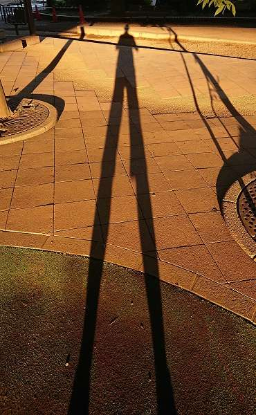

風が吹けば桶屋が！
ことわざで、ある事象が起こると
一見関係ない事物に影響が及ぶ事の例えがあるけど
どうやら地球のひと繋がりも 大変らしい
大西洋上に上昇気流の強い風が吹けば
日本は猛暑になる可能性が高いらしい
大西洋北半球の東側の海水温が上がる
→ 上昇気流の強い風が北に流れる
→ 上空の空気が冷え下降気流は高気圧になる
→ 晴れ渡ってヨーロッパが猛暑
→ 偏西風が高気圧の影響で蛇行する
→ 日本が もうしょうがないくらい 暑くなる
異常気象が いつもの気象になっていく
気性の荒い地球になっていく ち！きしょう
こうしちゃ いられない 飛ばされちゃうぞ
2020/09/18 like-a-ufo
UFOかいなか
アメリカ国防総省で未確認飛行物体(UFO)に
関する特別チームが編成されるらしい
ついに来たー！ UFO探求 = 宇宙人接近の可能性
基本的に UFO には地球上では考えられない
あるいは 人類の科学技術では到底不可能な と言う
意味合いが内在しているのだが
人類的にはかなり高度な米軍が脅威に感じるのは
どうやら宇宙人だけでは ないらしい
日本の防衛省も空中における識別不能物体に関して
情報収集・警戒監視の指示が出て あわただしい
低空域で昆虫、中空域で鳥、高いところで気球の空が懐かしい
何かを得ると 何かを失う 当たり前だけど 寂しく愛おしい
今後は地球外の流星や隕石だけでなく
宇宙ゴミになった衛星や
覇権を狙う国か 組織の 正体不明の無人偵察機
田舎では貨物用や有人用のプロトタイプドローンの嵐
安全と環境保全を担保し 速いなかなか快適がコンセプト
空域の統制と支配なかでも自動運転は必然
スカイハイウエイの構築と故障時のパラグライダー式不時着装置
何処の空も いつの空も 暑い中も さむいなかも 今の空かいなか
青い空と白い雲と風にそよぐ風情・・・今のうちに感じておこう
2020/09/28 im-a-duck
僕は鴨だよ
いつもと角度が違うけど
いつも通りの鴨だよ
僕はカワセミでもないしカモメでもないよ
僕はこの川が好きだし あの湖も好きだ
どんなにカモにされても フォアグラにされても
夕方は餌を探すのに忙しい
みんな それぞれに水を歩き回るのが好きだな
彼女も探したいし
僕は僕に出来る事を楽しんでるよ
僕らは僕らで個性があるでしょ
大丈夫 君たちも君たちで個性的だよ
だって 僕とは違うから
僕は鴨で 幸せかも
2020/09/30 sea-cat
アイシャドウじゃ ないわよ
お洒落と言うわけでもないけれど
なかなかイイネ でしょ
目がクッキリ くちばしバッチリ
紅(べに)だってさしている
くちばし と足を黄色でコーディネートし
全体は白とダークグレーのツートンカラーで
海に洗練されたモノトーンのコスチュームよ
赤いアイリングも アンリアルじゃないのよ
脈々と個々に繋がってきたものなのよ
だから どことなく威風堂々と しているでしょ
私はカモメの中の海猫よ
だから 海猫の世界を救うわ
守り続けて生き残るわ
わたしの アイリングにかけて
2020/10/15 yapparicar
流動化、リベラル化、やっぱりかー
流動化の速い社会を反映し、アメリカの若者はその時どきに反応する
守るべき所有物も権限もなく、又蓄える情況でもない
流れの中で ちょこっと借りあって、又流れていく
お互いの目的に向かう為に、リベラル化していく
前例の無い変化の中で、
何の救いにもならない固定観念に固執してはいられない
さすが多人種多民族のアメリカ、生物的社会的多様化の中に
必然的に現われる多面体、細分化、マイノリティ
それらの何が人類を導くか わからない
やっぱりかー 出るぞ ヒロインヒーロー
2020/10/16 atom
ヒロインヒーローを生むもの
ヒロインヒーローは小数だからヒロインヒーローなんだな
そして 彼等は多くの人々に賞賛され愛される
そうやって彼等は多数の人々によって成り立っている
そして世界の若者たちに拡散していく
今の自分たちと将来の自分たちを 考え思い つなげようとすると
地球上に生きる全ての人々が かけがえも無く大事で
貴重なものか わかる 涙と苦渋の中に 笑顔と優しさの中に
誰かの「それ 面白そうだね」の一言が 誰かの意志決定に
関与するかも知れないし しないかも知れない
それでも確かに 皆が住んでいる かけがえの無い地球は1つ
そして どんどん狭くなる
でも 狭くなっても大丈夫 争っている暇は無い
すべてを網羅して 突き進め その為の宇宙 その為の未来
地球外の探求、探査も必然的で
かけがえの無い太陽系 一粒一粒の原子や粒子で出来ている
その先にも 我らの天の川銀河が待っている そして その先にも
幾多の銀河が待っている 夢が現実になるのを待っている
2020/10/23 happy-memories
うたかたの もの
人は皆 朝の目覚めを知り 動き出す
おはよう おやすみ そしておはよう
ひとときの楽しい思い出を ありがとう
生き物は皆 闇夜を通り抜けて やって来る
こんにちは さようなら そして こんにちは
また 何処かで 出会う時を願って
どんなに楽しくても 有頂天の うたかたの夢
どんなに苦しくても あらがう うたかたの時
今度は 何に なるのかな
この空と 光は待っている
君の夜が明けるまで
2020/10/30 gargoyle
怪物(ガーゴイル)の敵対するもの
大聖堂の上で、人々に恐怖を与えながら
悪霊を外へ吐きださせ、悪霊の侵入を防いでいる
ケルト文明のケルト信仰は 動物、樹木や岩などの自然だそうです
日本古来の八百万の神に通ずるところが有ります
人は恐怖を感じて 力のなさを感じ 寄り集まり
共に有る中で 大事なものが増えていく
ガーゴイルは気付かせてくれる
人の 恐怖に鈍感な尊大さを
心の中に自分しかいない 寂しさを
2020/10/31 halloween
魔除けの祭り
古代ケルト人が起源とされるハロウィンは
10月31日が１年の終りで死者の霊が家族を訪ねる日だ
一緒に悪霊や怖い魔女がやって来る
ジャック・オー・ランタンを作って迎え撃て
聖者をたたえ 聖者の心を忘れるな
トリック・オア・トリート （Trick or treat）
すべての子供たちが お菓子をもらえますように